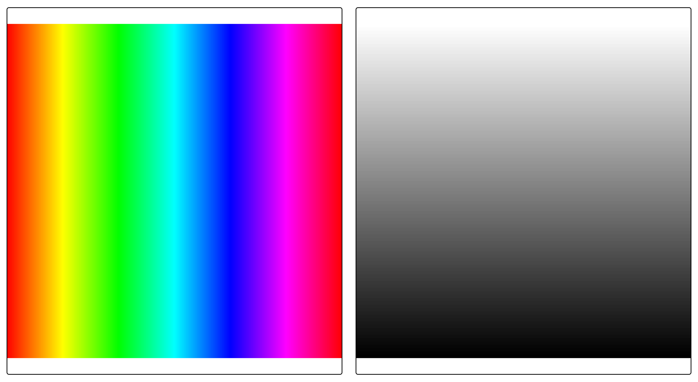
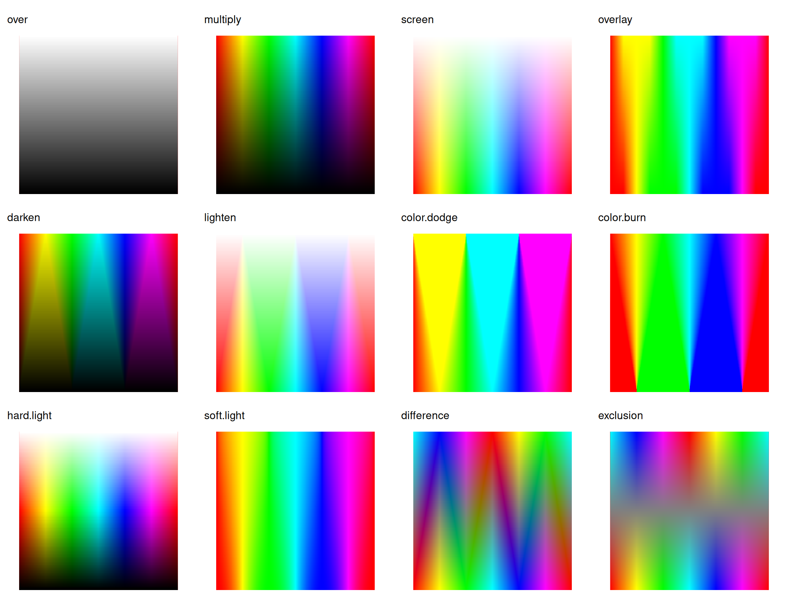
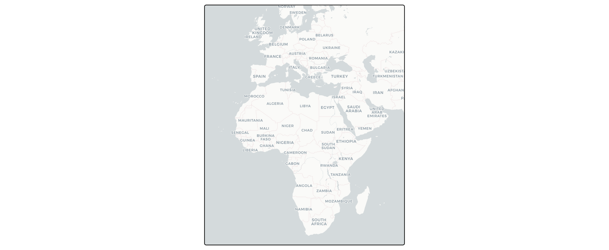
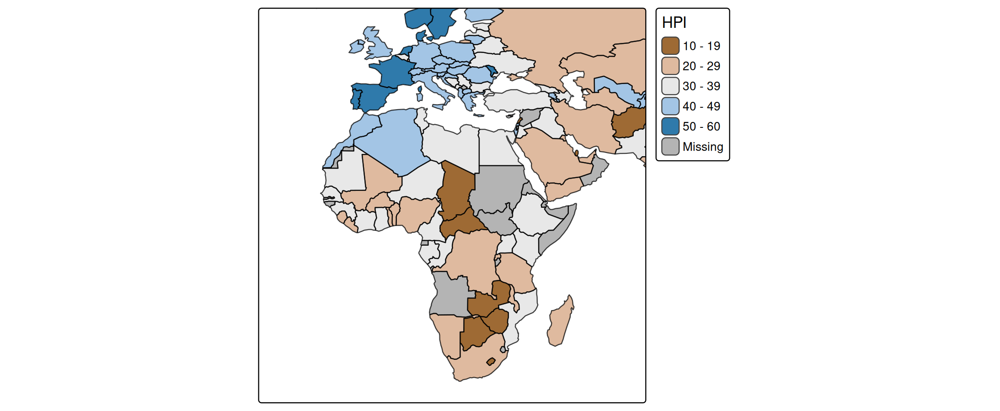
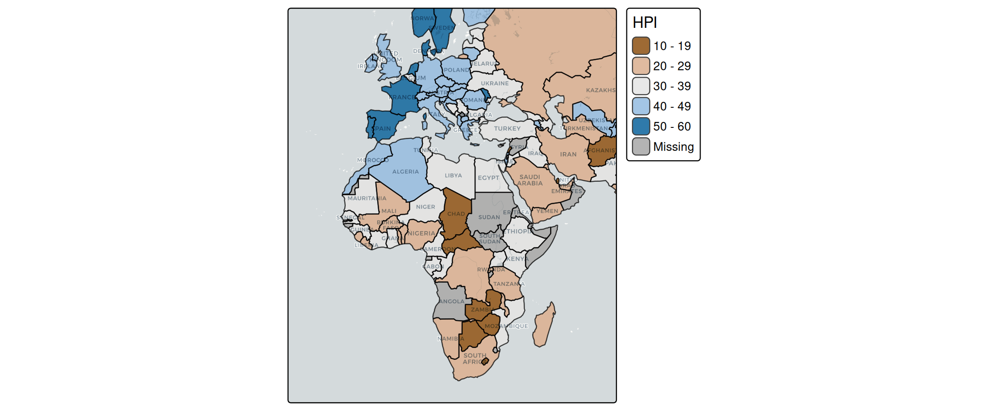
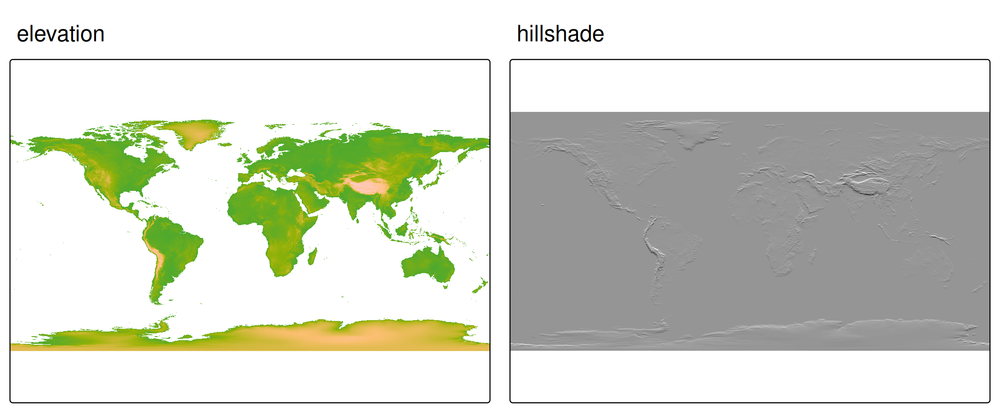
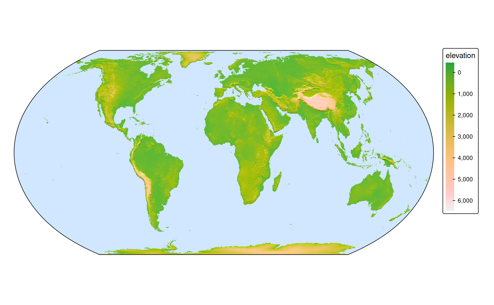

What is blending?
By default, when one map layer is drawn on top of another, the top layer simply covers the layer below. Where the top layer is (partly) transparent, the two are combined with alpha compositing: the result is a weighted average based on the opacity.
Blending generalizes this. Instead of averaging, a blend mode defines a formula that combines the color of each pixel in the top layer with the color of the pixel beneath it, producing a single combined image. This is the same idea as the “blend modes” in image editors such as GIMP or Photoshop, and as the layer compositing in the ggblend package for ggplot2.
Blending is set with the blend argument, which is available on every layer function (tm_polygons(), tm_raster(), tm_rgb(), tm_symbols(), tm_lines(), tm_text(), etc. #815).
Blend modes
For each pixel, let \(S\) be the source (the top layer) and \(D\) the destination (the layer below it), both as RGB values normalized to \([0, 1]\). The result is one image; the “Result” column describes what it looks like.
blend |
Formula | Result |
|---|---|---|
"over" |
\(S \cdot \alpha + D \cdot (1 - \alpha)\) | The top layer simply covers the layer below (default; no blending). |
"multiply" |
\(S \cdot D\) | Always darker. White in the top layer leaves the layer below unchanged; black turns it black. |
"screen" |
\(1 - (1 - S)(1 - D)\) | Always lighter. The opposite of multiply. |
"overlay" |
multiply if \(D < 0.5\), screen otherwise | Raises contrast: dark areas get darker, light areas get lighter. |
"darken" |
\(\min(S, D)\) | Keeps the darker color at each pixel. |
"lighten" |
\(\max(S, D)\) | Keeps the lighter color at each pixel. |
"color.dodge" |
\(D / (1 - S)\) | Strongly brightens the layer below. |
"color.burn" |
\(1 - (1 - D) / S\) | Strongly darkens the layer below. |
"hard.light" |
overlay with \(S\) and \(D\) swapped | Strong contrast, driven by the top layer. |
"soft.light" |
gentle hard.light
|
Soft contrast; a subtle version of hard.light. |
"difference" |
\(\lvert S - D \rvert\) | The absolute difference. Identical colors become black. |
"exclusion" |
\(S + D - 2 S D\) | Like difference but with lower contrast (grays rather than black). |
The default "over" applies no blending, so existing maps are unaffected.
The mode names above are the ones used in plot mode. In view mode the compound names follow the CSS spelling with hyphens instead of dots ("color-dodge", "color-burn", "hard-light", "soft-light"); the others are identical.
A sandbox example
The clearest way to see what each mode does is to blend two rasters where we know exactly what the pixels are. We use:
- a color image (the bottom layer): a vivid rainbow that runs through every hue from left to right, and
- a white-to-black gradient (the top layer): white at the top, black at the bottom.
Both are built with terra on the same grid, so they align pixel for pixel:
library(terra)
n = 300
# bottom layer: a horizontal rainbow (hue varies with x, full saturation/brightness)
img = rast(nrows = n, ncols = n, xmin = 0, xmax = 1, ymin = 0, ymax = 1, nlyrs = 3)
xy = xyFromCell(img, 1:ncell(img))
cols = grDevices::hsv(h = xy[, 1], s = 1, v = 1)
values(img) = t(grDevices::col2rgb(cols))
names(img) = c("red", "green", "blue")
# top layer: a vertical white-to-black gradient
grad = rast(img, nlyrs = 1)
values(grad) = rep(seq(1, 0, length.out = nrow(grad)), each = ncol(grad))
names(grad) = "gradient"We map the gradient with a continuous black-to-white scale, so a value of 1 is white (top) and 0 is black (bottom). With the default "over", the gradient simply covers the rainbow:
tm_rainbow = tm_shape(img) +
tm_rgb()
tm_gradient = tm_shape(grad) +
tm_raster("gradient",
col.scale = tm_scale_continuous(values = c("black", "white")),
col.legend = tm_legend_hide())
tmap_arrange(tm_rainbow, tm_gradient)
Here are all twelve modes side by side. A small helper keeps the code compact:
blend_map = function(mode) {
tm_shape(img) +
tm_rgb() +
tm_shape(grad) +
tm_raster("gradient",
col.scale = tm_scale_continuous(values = c("black", "white")),
col.legend = tm_legend_hide(),
blend = mode) +
tm_title(mode, size = 0.8) +
tm_layout(frame = FALSE)
}
modes = c("over", "multiply", "screen", "overlay",
"darken", "lighten", "color.dodge", "color.burn",
"hard.light", "soft.light", "difference", "exclusion")
tmap_arrange(lapply(modes, blend_map), ncol = 4)
Because the gradient is white at the top and black at the bottom, each panel reads top-to-bottom:
-
multiplykeeps the rainbow at the top (multiplying by white = 1) and fades it to black at the bottom (multiplying by black = 0). -
screendoes the reverse: untouched at the bottom, washed out to white at the top. -
overlayandhard.lightpush contrast, darkening the lower half and brightening the upper half. -
darkenandlightenkeep, at each pixel, whichever of the two layers is darker or lighter. -
color.dodgeandcolor.burnare the strong versions of brightening and darkening. -
differenceandexclusionsubtract the two layers, so the colors invert where the gradient is bright.
Example 1: basemap labels
# basemap
tm_basemap("CartoDB.Positron", zoom = 3) +
tm_crs(bbox = "Africa", ext =2 )
# thematic map
tm_shape(World, bbox = "Africa", ext =2 ) +
tm_polygons(fill = "HPI",
fill.scale = tm_scale_intervals(values = "-bu_br_div"),
blend = "multiply")
#> [tip] Consider a suitable map projection, e.g. by adding `+ tm_crs("auto")`.
#> This message is displayed once per session.
# multiply overlay
tm_basemap("CartoDB.Positron", zoom = 3) +
tm_shape(World, bbox = "Africa", ext =2 ) +
tm_polygons(fill = "HPI",
fill.scale = tm_scale_intervals(values = "-bu_br_div"),
blend = "multiply")
Example 2: shaded relief
A common reason to reach for blend is to combine a colored map with a hillshade: a grayscale layer that simulates light and shadow on terrain, making slopes visible. On its own the hillshade is just gray; blended onto a colored elevation map it adds a sense of relief without changing the colors.
We compute the hillshade from the elevation raster in the land dataset:
elev = rast(land)["elevation"]
elev[is.na(elev)] = 0
hs = shade(
slope = terrain(elev, "slope", unit = "radians"),
aspect = terrain(elev, "aspect", unit = "radians"))
names(hs) = "hillshade"First, the two layers on their own. The colored elevation map (left) and the grayscale hillshade (right):
m_elev = tm_shape(land) +
tm_raster("elevation",
col.scale = tm_scale_continuous(values = "hcl.terrain"),
col.legend = tm_legend_hide()) +
tm_title("elevation")
m_hs = tm_shape(hs) +
tm_raster("hillshade",
col.scale = tm_scale_continuous(values = c("black", "white")),
col.legend = tm_legend_hide()) +
tm_title("hillshade")
tmap_arrange(m_elev, m_hs, ncol = 2)
Now we draw the elevation map and blend the hillshade on top with "overlay", which darkens the shaded slopes and lightens the lit ones while keeping the terrain colors:
tm_shape(land) +
tm_raster("elevation",
col.scale = tm_scale_continuous(values = "hcl.terrain"),
col.legend = tm_legend()) +
tm_shape(hs) +
tm_raster("hillshade",
col.scale = tm_scale_continuous(values = c("black", "white")),
col.legend = tm_legend_hide(),
blend = "overlay") +
tm_crs("+proj=eqearth") +
tm_layout(
earth_boundary = TRUE,
bg.color = "slategray1",
frame = FALSE,
earth_boundary.lwd = 1,
inner.margins = 0.01)
#> Linking to GEOS 3.12.1, GDAL 3.8.4, PROJ 9.4.0; sf_use_s2() is FALSE
Requirements and notes
Blending in plot mode relies on graphics-device compositing, which has a few requirements:
-
R >= 4.2 is needed. On older versions
blendis ignored (with a warning) and the layer is drawn normally. - A compatible graphics device is required, for example
png(type = "cairo")orsvg(). If the active device does not support the requested operator, tmap falls back to no blending and warns. The default RStudio graphics device may not support compositing; if a blended map looks unblended, re-plot to a Cairo or SVG device. The simpler operators ("multiply","screen", …) are the most widely supported; the compound ones ("color.dodge","soft.light", …) require a fuller compositing implementation. - Blending acts on the rendered pixels, so it is most predictable when the layers involved are opaque. Combining
blendwith partial transparency (fill_alpha,col_alpha) is possible but harder to reason about.
Internally, plot mode uses [grid::groupGrob()][grid::groupGrob], which also supports the Porter-Duff operators ("clear", "source", "in", "out", "atop", "xor", …) beyond the blend modes listed above.
View mode
In interactive ("view") mode, blending is applied through the CSS mix-blend-mode property on the Leaflet pane of the layer. The simple mode names are identical to plot mode; the compound ones use the CSS hyphen spelling ("color-dodge", "hard-light", …). As in plot mode, "over" means no blending.
tmap_mode("view")
tm_shape(land) +
tm_raster("elevation",
col.scale = tm_scale_continuous(values = "hcl.terrain")) +
tm_shape(hs) +
tm_raster("hillshade",
col.scale = tm_scale_continuous(values = c("black", "white")),
col.legend = tm_legend_hide(),
blend = "overlay")